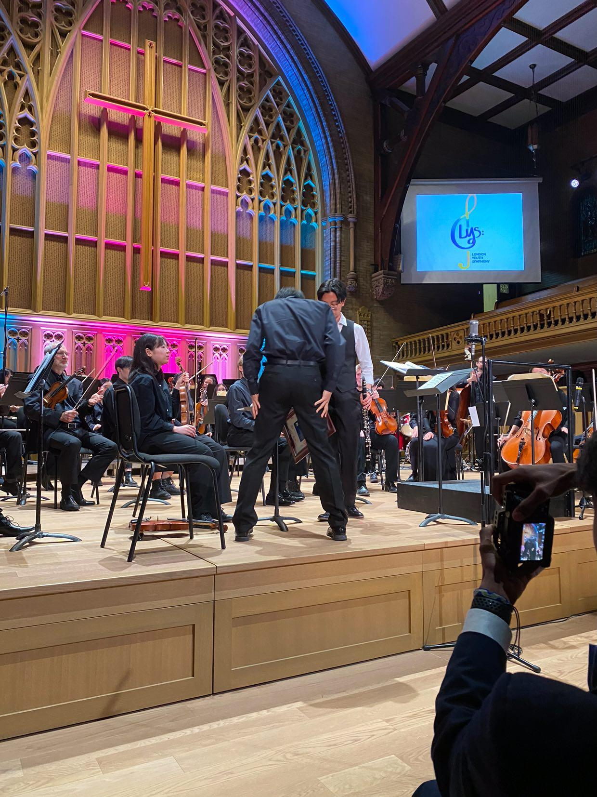
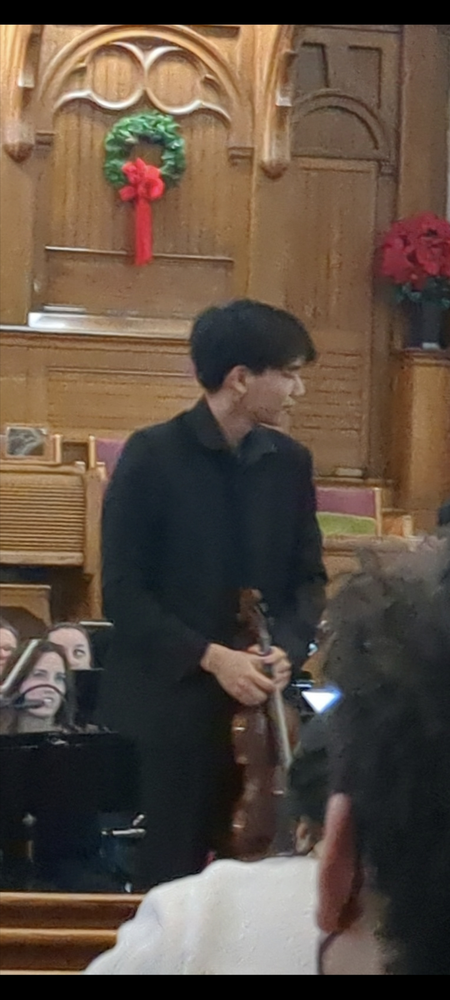
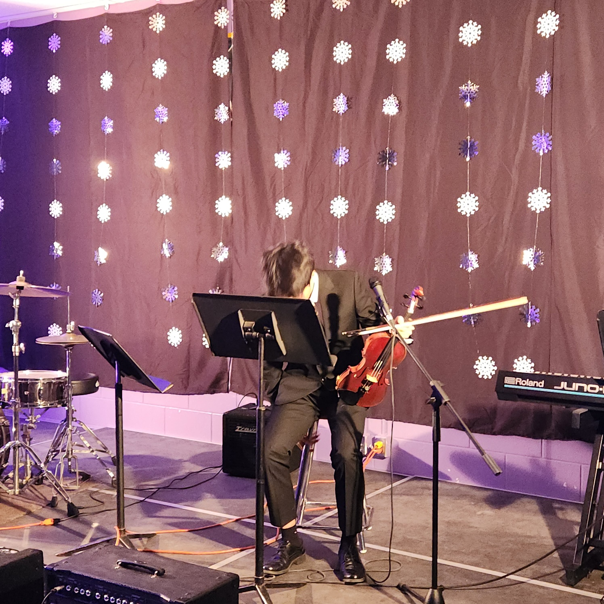

Violin Activities
Classical violin performance, orchestral leadership, solo performance, and ensemble collaboration.
Overview
Alongside my engineering work, violin has been a major part of my development in discipline, leadership, collaboration, and performance. My experience includes orchestral leadership, solo performances, chamber music, ensemble work, and student organization leadership.
I have served as Concertmaster of the London Youth Symphony for several years, performed Wieniawski’s Violin Concerto No. 2 as a soloist in collaboration with the London Community Orchestra (LCO), performed the Mendelssohn Violin Concerto at Centennial Hall as a final soloist for LCSS, served as First Chair of YAPCA, participated in multiple music organizations, and performed in masterclasses and events hosted through Western University.
Highlights
Featured Performance
Recorded solo performance with the London Community Orchestra (LCO). This is a shortened excerpt from the full performance.
Performance & Leadership
My orchestral experience involved leading symphonies and sections, preparing repertoire, coordinating with conductors and peers, and performing in formal concert settings.
These experiences developed leadership skills, attention to detail, resilience under pressure, and the ability to contribute both as an individual performer and as part of a larger ensemble.


Soloist Experience
Solo performance required independent preparation, interpretation, memorization, stage presence, and technical refinement.
Preparing concerto repertoire strengthened my ability to work through difficult material over long periods and perform under high-pressure conditions.


Preparation & Musicianship
Violin performance is not only the final concert itself, but also the preparation process behind it.
Score study, repetition, lesson preparation, ensemble rehearsals, and technical refinement all shaped how I approached long-term skill development and disciplined practice.


Transferable Skills
My violin background strongly shaped how I approach engineering work. Long-term musical training developed patience, precision, structured practice habits, and comfort receiving critique.
Orchestral leadership also strengthened communication, accountability, teamwork, and the ability to perform under pressure.
These experiences translated directly into how I approach technical projects: iterative improvement, preparation before execution, attention to detail, and maintaining composure in demanding environments.